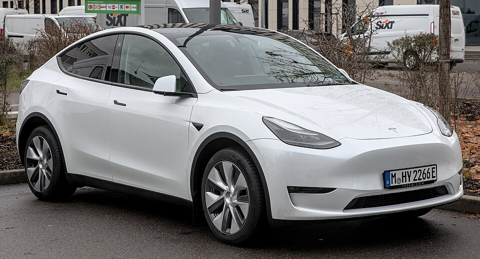
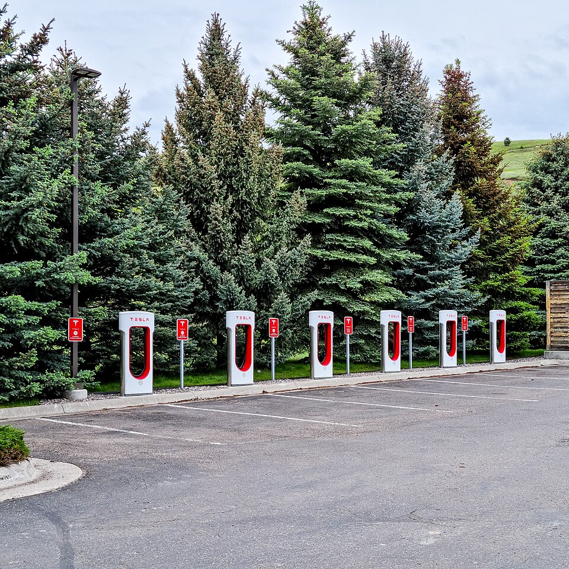

설립연도
2003년

전기차를 대중화한 회사로, 모델 3·모델 Y 같은 전기차가 매출의 대부분이에요. 가정용·전력망용 대형 배터리(파워월, 메가팩)와 태양광 같은 에너지 사업도 빠르게 커지고 있어요. 자율주행 소프트웨어와 로봇택시, 휴머노이드 로봇에도 투자하고 있어요.
칸에 마우스를 올리거나 누르면 자세한 설명을 볼 수 있어요.

테슬라 매출의 대부분을 차지해요. 중형 세단 모델 3와 SUV 모델 Y가 가장 많이 팔리고, 미국·중국·독일에 대형 공장(기가팩토리)이 있어요.
대표 예모델 3, 모델 Y, 모델 S·X, 사이버트럭
집에 두는 배터리 파워월과 전력회사용 대형 배터리 메가팩을 팔아요. 2025년 매출이 27% 늘 만큼 빠르게 크고 있어요.
대표 예메가팩, 파워월, 태양광

테슬라 전용 고속 충전소 슈퍼차저, 차량 정비, 보험, 중고차 판매 등 차를 산 뒤에 쓰는 서비스예요.
대표 예슈퍼차저, 정비, 보험
운전을 대신해 주는 FSD 소프트웨어를 구독으로 팔고, 운전자 없는 로보택시와 사람 모양 로봇 옵티머스를 개발하고 있어요.
대표 예FSD, 로보택시, 옵티머스
원화 금액은 1달러 = 1,339.4원(2026년 11월 20일 유럽중앙은행 기준환율)으로 환산한 대략적인 값이에요.
| 기간 | 매출 | 영업이익 | 순이익 |
|---|
사업마다 겨루는 상대가 달라요